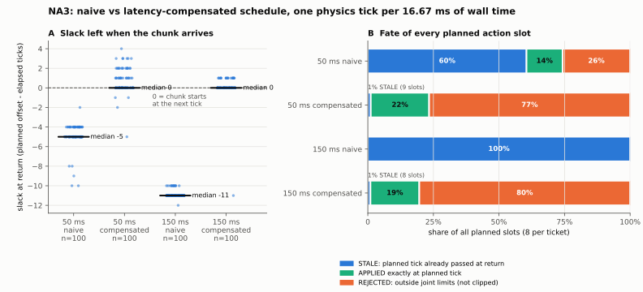

其余一切与 10.20 相同
同一场景、P0 工程 checkpoint 与 CPU worker；日志组件 v0.4；每个物理 tick 占 16.667 ms 墙钟；渲染不计入物理时间。worker 按声明延迟 50 或 150 ms 等待后返回。四个案例按固定顺序运行：朴素、补偿各两档。
01 / METHOD
在 tick k 发请求时，补偿调度取最近 8 次返回实际经过的 tick 数的最大值作为 L̂，把 8 个槽位计划在 k+L̂+1 … k+L̂+8，并把对应的时间偏移作为模型输入。它不读取声明的延迟，也不使用任何私有信息。第一次请求还没有延迟历史，所以 L̂ = 0。
同一场景、P0 工程 checkpoint 与 CPU worker；日志组件 v0.4；每个物理 tick 占 16.667 ms 墙钟；渲染不计入物理时间。worker 按声明延迟 50 或 150 ms 等待后返回。四个案例按固定顺序运行：朴素、补偿各两档。
守卫触发时，现在会写入 GUARD_TRIP.json：触发的 tick、q、qd、越界的关节与数值，以及当时保持的目标。冻结前的 CPU 预演专门测了一次守卫停止，记录完整。本轮四个原生案例都没有触发守卫。
02 / RESULT

| 案例 | 计划偏移 L̂（最小/中位/最大） | 返回时余量（中位/最小） | 作废槽位 | 按时生效 | 超限拒绝 | 节奏：延迟 ≤ 1 周期 |
|---|---|---|---|---|---|---|
| 50 ms 朴素 | 0 / 0 / 0 | −5 / −10 | 484 / 800 | 110 | 206 | 91.9% |
| 50 ms 补偿 | 0 / 5 / 7 | 0 / −5 | 9 / 800 | 178 | 613 | 80.0% |
| 150 ms 朴素 | 0 / 0 / 0 | −11 / −12 | 800 / 800 | 0 | 0 | 98.4% |
| 150 ms 补偿 | 0 / 11 / 11 | 0 / −11 | 8 / 800 | 149 | 643 | 92.7% |
150 ms 补偿的 8 个作废全部来自第一个 ticket（还没有延迟历史）。50 ms 补偿的 9 个中，5 个来自第一个 ticket，另外 4 个来自 3 次实际延迟超过了近 8 次最大值。
每个 ticket 的作废数都恰好等于 min(8, max(0, 经过 tick − L̂))，reader 逐个核对。
可执行的槽位多了，每个 tick 要持久化的事件也多了，50 ms 补偿案例只有 80% 的 tick 延迟在一个周期内。推理在途期间每个 tick 的实际墙钟中位仍为 14.8–15.8 ms。
03 / NATIVE CAMERA
04 / VERIFICATION AND LIMITS
在 10.20 的检查之外，新增两项：每个请求的计划 tick 与记录的偏移一致；若案例因守卫停止，必须存在对应 tick 的守卫记录且列出越界项，没有守卫停止时则不应出现该文件。
预算：4 个正式案例各启动 1 次，按固定顺序运行，退出码都是 0，运行后源码冻结不变。冻结前做过 5 次 CPU 预演，不计入原生次数。
补偿让模型从更早的观测预测更远的未来（最远 L̂+8 个 tick）。P0 已提交的目标中约 78–81% 超限，所以动作精度是否因此下降，本轮无法判断。
“近 8 次最大值”是最简单的确定性规则：第一个动作块总会作废，对延迟突然变长也没有保护。这里没有比较更强的预测方法。节奏因子仍为 4，不是 1:1 实时。本轮不涉及任务完成、受力、化学终点、S/F/R、M/B3 和真机。
05 / SCIENTIFIC FRONTIER
测出延迟消耗物理时间（10.20）；给出第一个只用公开信息的补偿对照，在相同条件下把作废降到约 1%（本轮）。
能衡量动作质量的任务与终点 → 合格 S/F/R 数据 → 用学习策略替换 P0，与这个补偿对照做同预算比较。
M/B3 仍然 UNTESTED。补偿对照只是 E02 要求的强基线的一个版本，本身不构成方法优势的证据。
06 / SOURCE-BOUND ARTIFACTS